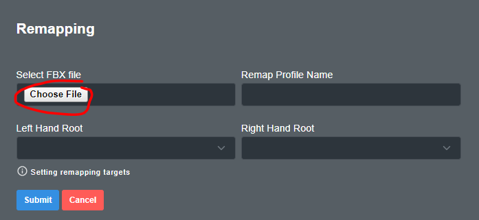
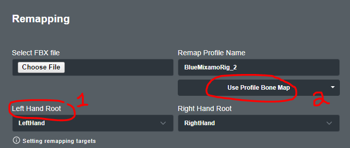
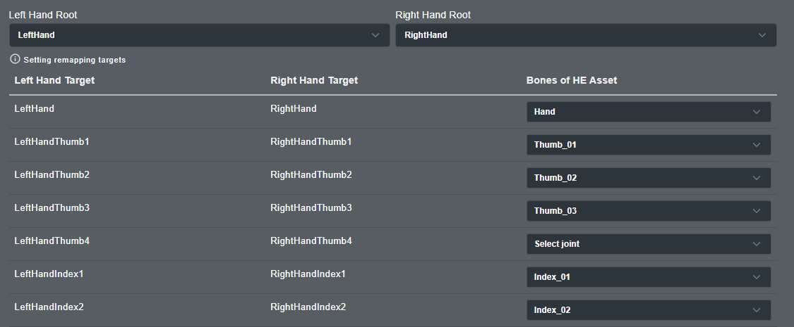
This is how the Hand Engine asset is mapped. Please use this as a guide for assigning the bones of your asset to the bones of the hand in Hand Engine:


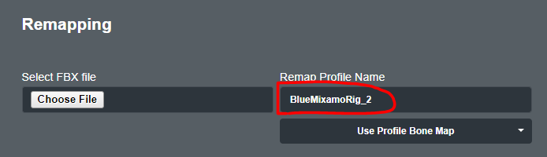
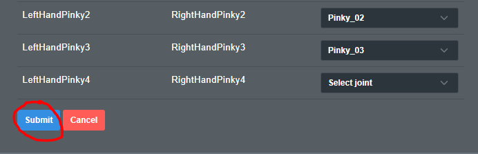
Remapping is the function of assigning the bones of the hand asset within Hand Engine to drive the correct bones on the asset you are streaming hand data onto in another software.
IMPORTANT: This task will need to be completed prior to streaming hands to Unreal Engine using the Fidelity glove.
In order to remap the Hand Engine output to your custom character, you must first create an FBX that has just your target character in it and that character is in a full T-Pose that is saved at the first frame in the FBX.
The character must be in a full T-pose, with each hand in an L-Pose. The fingers of the character should align with a major axis of the scene/FBX.
Please note this FBX is used only for extracting bone hierarchy and rotation order data from your character. Once the remapping process is complete, you will be able to stream data from Hand Engine to any FBX/scene containing that character.
The key features for each hand pose are:
NOTE: The Hand Engine hand asset is set up using the metric system. Please ensure that your target FBX is set up with the same measurement system (working units in centimeters) to the software you are streaming.
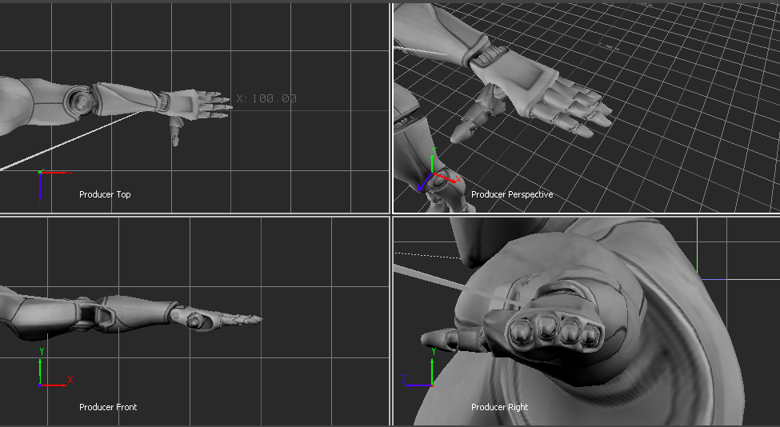
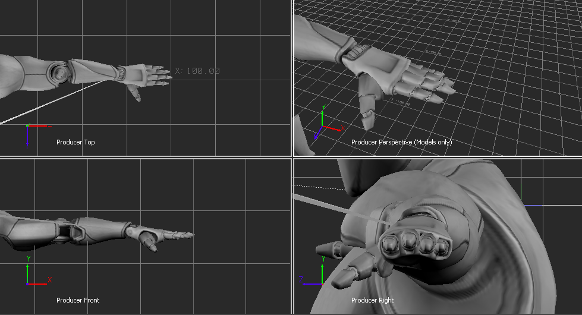
Fingers are curled/in a relaxed position. This will cause the fingers to be over-rotated then creating a fist. 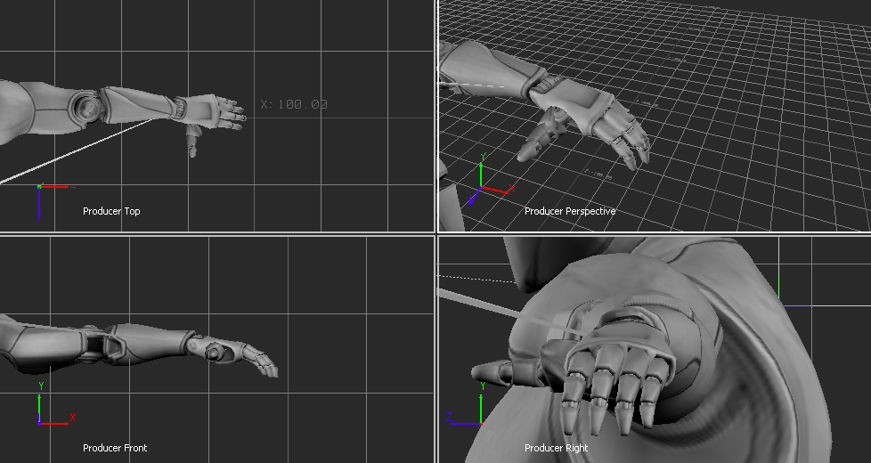
Fingers and thumb are correctly set, but the hand/arm is rotated relative to the major axis of the global scene. This will cause off-axis rotations of the fingers/thumb when curling them. 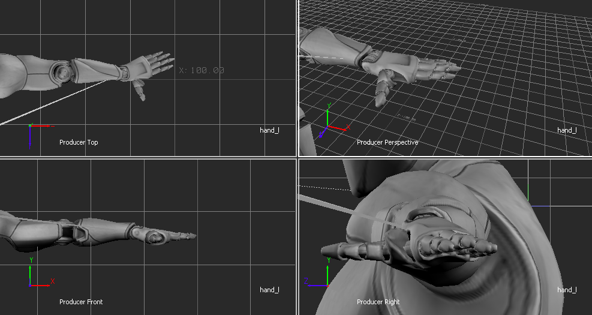





If you need to make any adjustments to this remapping, you can make the changes and click update at the bottom. It will overwrite the previous saved remap:
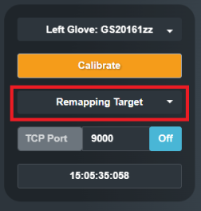
Download and Install Unreal
NOTE: for this example, we are using version UE5.1
Open the folder corresponding to your version of Unreal, then copy the folder labeled MocapProLiveLink to the directory:
<Unreal Installation Directory>\UE_4.2X\Engine\Plugins\Animation
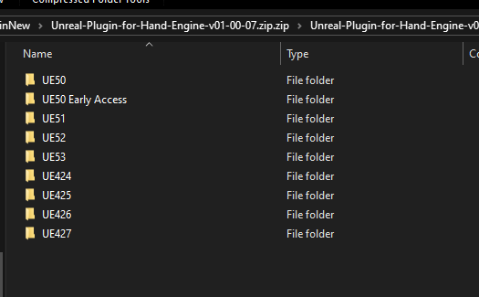
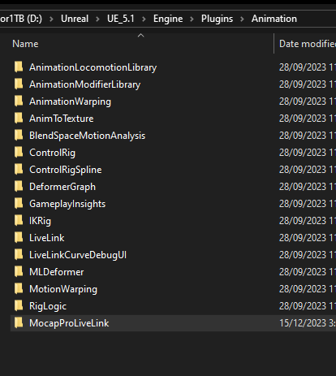
Next, we will create a new UE project. In Unreal Project Browser select Games > Blank, then click Create Project.
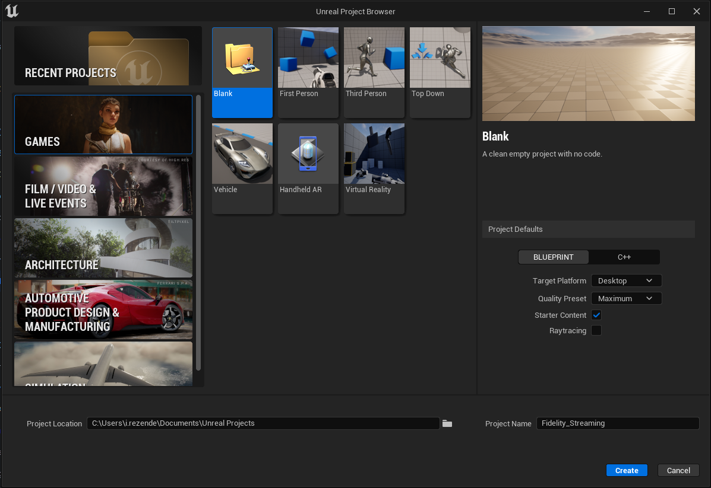
Once the project is loaded we need to enable the LiveLink plugins in your new project. From the Edit menu, select Plugins. 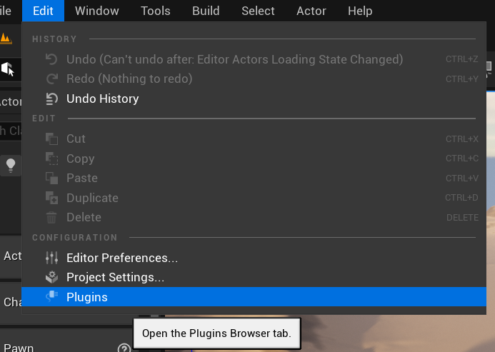
In the Plugins menu search “Live Link” and enable Live Link and Mocap Pro LiveLink, then restart your project when prompted. 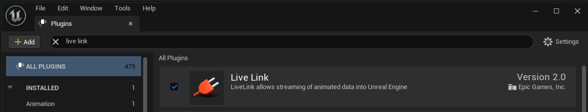
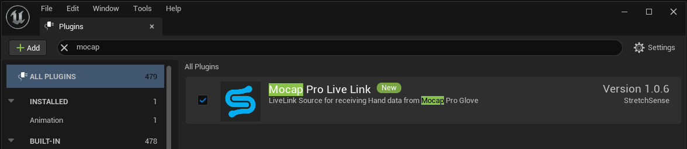
Next, open the LiveLink Menu from Window > Virtual Production > Live Link
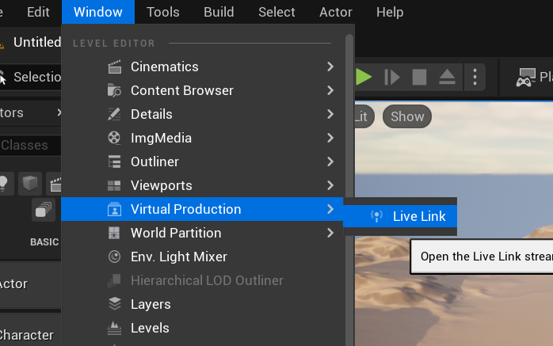
From the Source dropdown in the Live Link menu select Mocap Pro Glove, then set the IP Address and TCP Port settings as specified in Hand Engine. You will have to add one live link to each hand.
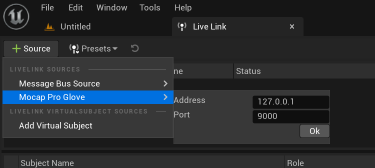
NOTE: The default value for Address is 127.0.0.1 (= localhost), i.e., you are running Hand Engine on the same PC that you are running Unreal. If you have bound Hand Engine to a different IP address (e.g. if you are running Hand Engine and Unreal on different computers on the same LAN), use this IP address instead for Host.
NOTE: This step must be repeated if you have toggled Streaming to Off and then back to On in Hand Engine.
The Source Status will appear as Receiving and the Subject Name will show a hand (left or right) along with the Performer Name from Hand Engine.
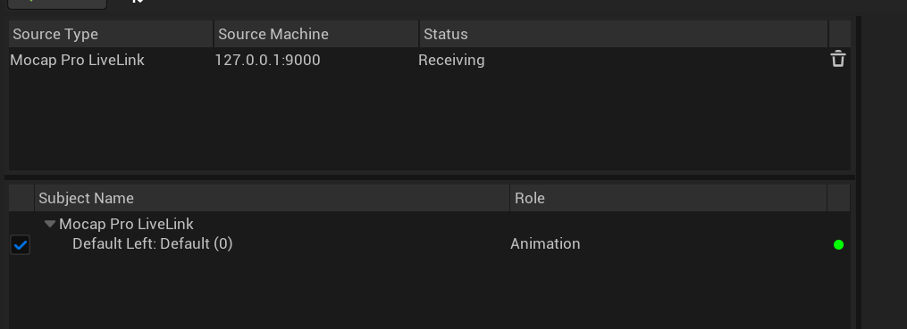
From the Content Browser select Import and load your custom rig that has been set in a T-Pose as instructed in the beginning of this guide.
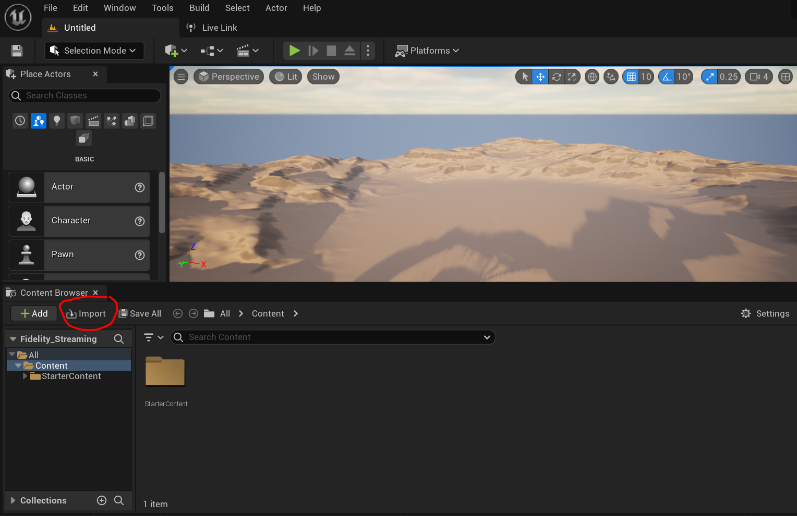
In the Content Browser, right-click the newly imported Skeletal Mesh and select Create > Anim Blueprint.
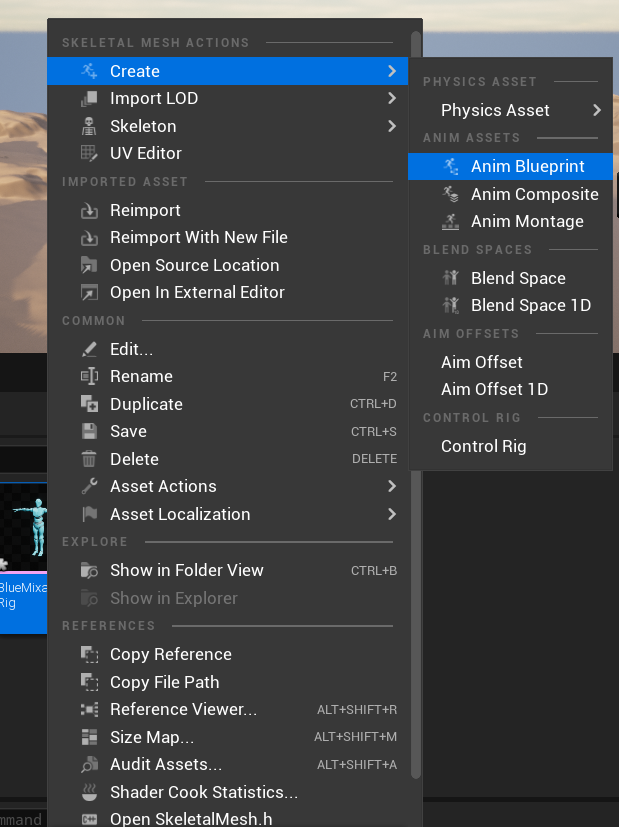
Open the Anim Blueprint that was created, right-click on the space, and select Live Link Pose.
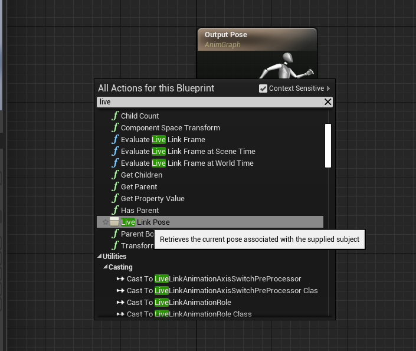
Connect a LiveLink Pose to the Output Pose. Select the source hand from the Live Link Subject Name dropdown, then compile the object.
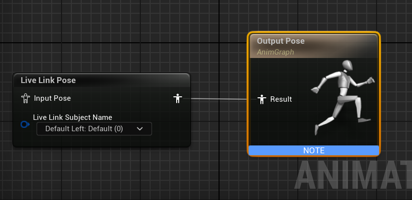
You should now be able to see finger data streamed into your customer character.
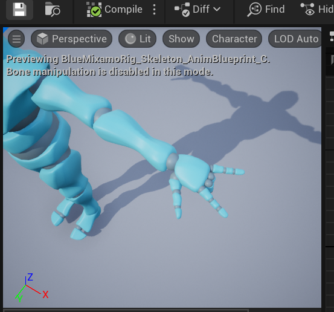